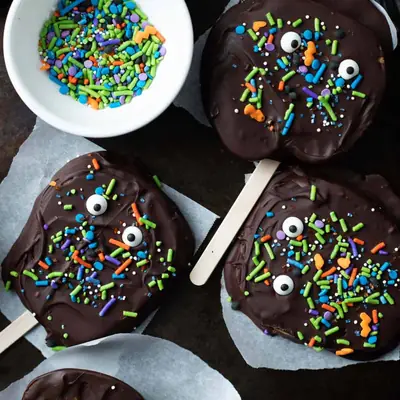

Halloween Chocolate Apples

Ingredients
- 2 large apples
- 10 ounces semi-sweet chocolate chips
- 16 candy eyes
- Sprinkles
Steps
- Slice your large apples into thin slices. To avoid the core, I make two slices on each side of the apples.
- Melt your chocolate chips in a glass bowl in the microwave in 30-second increments, stirring with a spatula between each increment until the chocolate is melted and smooth.
- Add your apple slices one at a time to the bowl of melted chocolate. Using a spoon or spatula coat the apple slice with chocolate.
- Using your fingers or tongs, place the apple slices on a baking sheet lined with parchment paper. Immediately add the candy eyes, and sprinkles before the chocolate has a chance to set.
- Place a popsicle stick under the chocolate apple slice so that the melted chocolate covers the stick. Alternatively, you can cut a small hole in the bottom of the apple slice to make room for the popsicle stick to glide it into place.
- Transfer the chocolate apple slices to the refrigerator for 10 minutes to set. Serve and enjoy!
Recipe by Anjali Shah · The Picky Eater, from The Picky Eater. Saved here for personal use; the original has the full notes, tips and photos. Open original